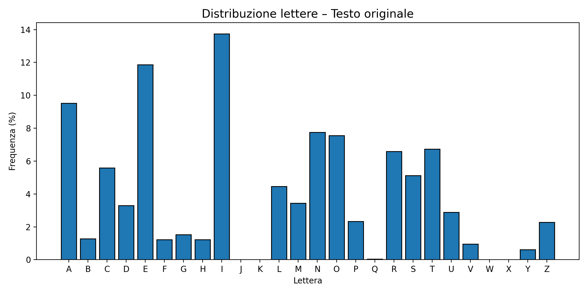
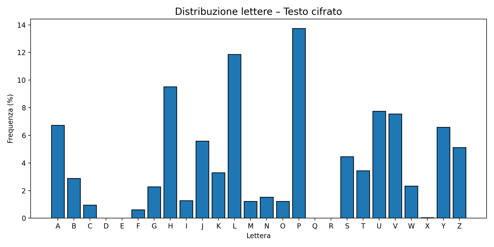

Analisi di Dataset e Distribuzioni in Cybersecurity
Corso di Metodi Statistici per la Sicurezza – Autore: Salvatore Salis – Data: 14/10/2025
La cybersecurity è oggi uno dei campi in cui la statistica trova applicazioni pratiche quotidiane.
Dalla raccolta dei log al rilevamento delle anomalie, la capacità di leggere e interpretare i dati
è essenziale per comprendere dove e come si manifestano le minacce.
In questa analisi vedremo due approcci complementari:
- Analisi di un dataset di eventi di sicurezza (distribuzioni univariate e bivariate).
- Analisi della distribuzione delle lettere in un testo, applicata al cifrario di Cesare.
Entrambe le sezioni mirano a mostrare come un approccio basato su distribuzioni e frequenze possa
trasformare dati grezzi in conoscenza utile alla sicurezza informatica.
Parte 1 — Dataset e Distribuzioni di Eventi di Sicurezza
Ogni sistema informatico produce continuamente dati: tentativi di accesso, connessioni di rete,
allarmi e messaggi di log. Per comprenderne il comportamento serve uno strumento statistico:
la distribuzione, ovvero come i valori di una variabile (es. gravità o vettore d’attacco)
si ripartiscono nel dataset.
L’analisi seguente si basa su un piccolo database simulato di 41 eventi,
analizzati con SQLite per calcolare le distribuzioni di:
severity – livello di gravità (high, medium, low)attack_vector – tipologia di attaccocountry – provenienza dell’evento
Per ogni distribuzione, è riportata anche la percentuale sul totale:
(freq / 41) × 100.
Parte 2 — Distribuzione delle Lettere e Cifrario di Cesare
Il cifrario di Cesare è uno dei più semplici sistemi di crittografia: ogni lettera del testo
viene spostata di un numero fisso di posizioni nell’alfabeto. Ad esempio, con uno shift di 3,
la lettera “A” diventa “D”, “B” diventa “E” e così via.
Obiettivo dell’esperimento
Dimostrare come, anche senza conoscere lo shift usato per cifrare, sia possibile
recuperare il testo originale analizzando la distribuzione delle lettere.
Se una lettera compare molto frequentemente nel testo cifrato,
probabilmente corrisponde alla lettera più comune del testo originale.
Esecuzione offline
Lo script JavaScript (cesare_simple.js) è stato eseguito in locale.
Il codice non è incluso nel blog ma disponibile nel repository GitHub:
→ Apri la cartella /cesare su GitHub
Comando d’esempio:
node cesare_simple.js --in input.txt --shift 7
Risultati
Il testo originale scelto era un articolo introduttivo sulla cybersecurity.
Dopo normalizzazione (solo lettere A–Z, accenti rimossi), il testo conteneva
1.973 caratteri. È stato cifrato con shift = 7.
Estratto del Ciphertext
SHJFILYZLJBYPAFYHWWYLZLUAHZVWYHAABAAVKHSSHCCLUAVKPPUALYULABUVKLPZLAA...
Estratto del Plaintext decifrato
LACYBERSECURITYRAPPRESENTASOPRATTUTTODALLAVVENTODIINTERNETUNODEISETTOR...
Analizzando le distribuzioni delle lettere nel ciphertext, si è osservato che
una lettera specifica compariva con la stessa frequenza della “E” nel testo in chiaro.
Da questa corrispondenza si è dedotto lo shift usato per cifrare,
confermando così il corretto recupero del plaintext.
Distribuzioni delle lettere
Di seguito un frammento dei conteggi delle lettere nel testo originale e in quello cifrato.
Source (input)

Ciphertext

Nota: le distribuzioni sono state generate con lo script locale.
Le immagini e i file CSV si trovano nella directory output/.
Interpretazione
Anche con un metodo semplice, basato solo sulla distribuzione delle lettere,
è possibile dedurre con successo lo shift del cifrario di Cesare.
L’esperimento dimostra come la statistica — in particolare l’analisi di frequenza —
sia alla base di molti attacchi e difese nella crittografia moderna.